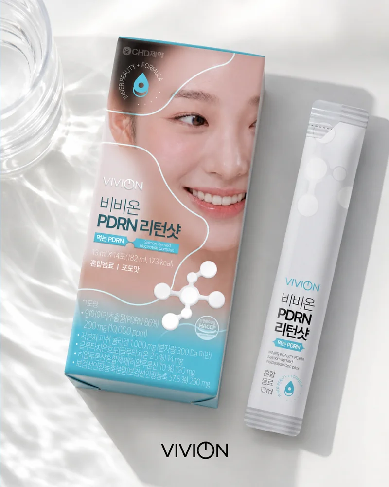
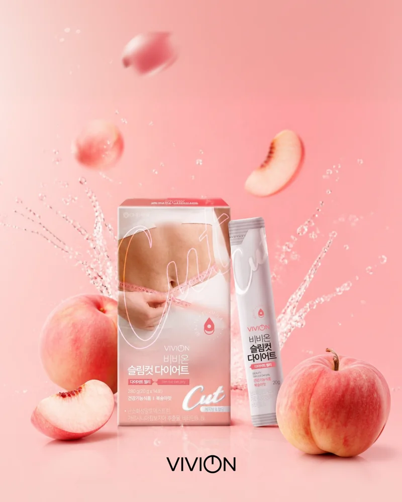
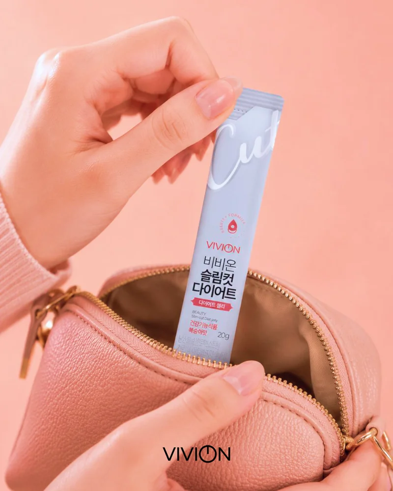
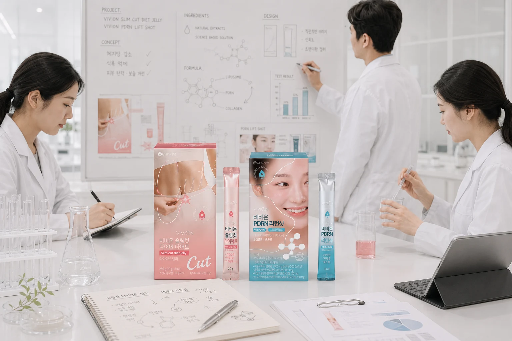
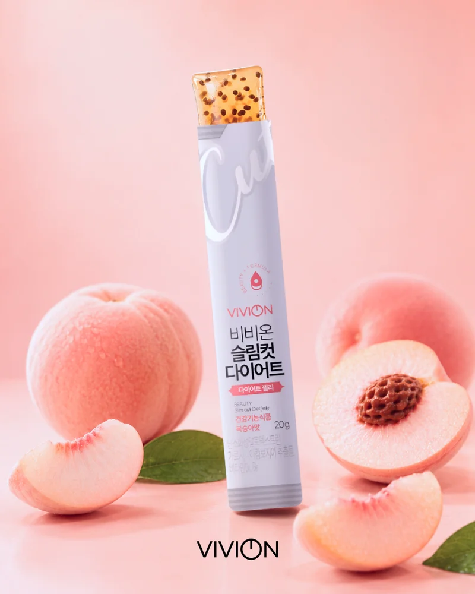
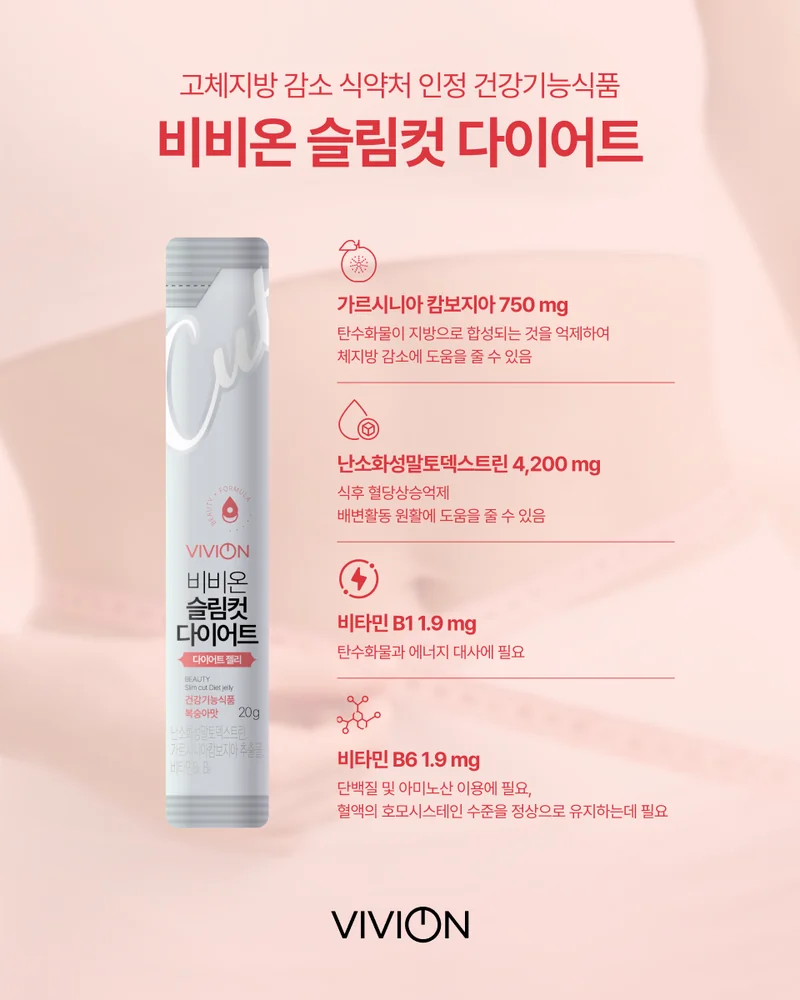

의외로 맛이 깔끔해서 매일 챙겨요
건기식이라 비릴 줄 알았는데 살짝 달콤한 베리향이라 매일 챙겨 먹기 부담 없어요. 한 박스 다 먹고 컨디션이 다른 게 느껴져서 바로 60포 묶음으로 재구매했습니다.
김**
PDRN 리턴샷
비비온을 챙겨 먹는 약사·고객의 실제 후기와 자주 묻는 질문을 모았어요.
총 1,284개의 리뷰
건기식이라 비릴 줄 알았는데 살짝 달콤한 베리향이라 매일 챙겨 먹기 부담 없어요. 한 박스 다 먹고 컨디션이 다른 게 느껴져서 바로 60포 묶음으로 재구매했습니다.
젤리 맛이 진짜 디저트 느낌이라 식후 입 터질 때 한 포 먹으면 신기하게 만족돼요. 2주 챙겨 먹으니 옷 핏이 달라 보여서 신나서 또 구매했어요.
바쁜 아침에 영양제 챙기는 게 늘 부담이었는데 이건 가방에 넣어 두고 점심 후에 짜서 바로 먹어요. 따로 물 챙길 필요가 없어서 루틴 만들기 쉬워요.
먹는 케어라 부담 없으시고, 매일 한 포씩 챙기는 루틴이 생겨서 좋아하시더라구요. 다음 번엔 시그니처 트리오로 사드리려고요.
늘 푸석하던 피부가 한 달 챙겨 먹으니 한결 환해진 느낌이에요. 영양제는 잘 못 챙겨 먹는 편인데 이건 맛도 좋고 간편해서 꾸준히 가게 되네요.
제가 약국에서 일하는 약사인데, 손님들께 자주 권해드리는 제품 중 하나예요. 함량과 원료 출처가 투명하게 표기되어 있고, 비린맛 없이 깔끔하게 정제돼 있어 매일 드시기 좋습니다.
한 포 짜 먹으면 입 안 가득 복숭아 향이 퍼져요. 디저트 먹는 기분이라 식후 입 터질 때 챙기면 죄책감이 없어요.
스틱 포장이라 가방에 넣어두고 점심 후 한 포 짜 먹어요. 영양제 챙기는 부담이 확실히 줄었어요.
친구랑 함께 챙기려고 듀오로 구매했는데 둘 다 만족해서 다음엔 트리오로 갈 예정이에요. 같이 챙기니까 빠뜨릴 일이 없어 좋네요.
2박스째 챙겨 먹고 있는데, 자고 일어났을 때 피부톤이 한결 환해진 게 거울로 보여요. 매일 챙겨 먹게 되는 이유.
약국 다니는 친구가 권해줘서 시작했어요. 원료 출처가 투명하고 함량도 명확하게 표기돼 있어 신뢰감 있어요.
운동 한 시간 전에 한 포 챙겨 먹는데, 입 터짐이 확실히 줄어든 게 느껴져요. 가벼운 운동과 같이 할 때 효과가 더 좋아요.
루틴이 끊기면 아쉬울까 봐 한 박스 다 떨어지기 전에 미리 주문해뒀어요. 정기 구독 오픈하면 바로 신청할 예정.
PDRN 두 박스에 슬림컷 한 박스 구성이라 두 달은 거뜬해요. 단품으로 사는 것보다 훨씬 저렴해서 만족.
건기식 특유의 비린맛이 거의 없고 살짝 새콤한 맛이라 매일 챙기기 좋아요. 어머니께도 챙겨드리고 있어요.
스킨케어로는 한계가 있어서 안에서 챙기는 케어를 찾다가 만났어요. 한 달 챙기니 피로감이 덜한 느낌이에요.
디저트를 못 끊는 편이라 부담 줄이려고 시작했어요. 식후 한 포 챙기니까 폭식이 확실히 줄었어요.
답변 준비 중입니다. 빠른 시일 내에 답변드리겠습니다.
PDRN 리턴샷은 일반 식품 원료로 구성되어 있지만, 임산부·수유부의 경우 개인 컨디션에 따라 영향을 줄 수 있어 섭취 전 담당 산부인과 전문의와 반드시 상담해주시는 것을 권장드립니다.
슬림컷 다이어트는 식약처 기능성 인정 원료로 체지방 감소를 돕는 보조 식품입니다. 가벼운 운동·식단 관리와 함께 섭취하실 때 시너지가 가장 크며, 단독 섭취만으로 즉각적인 체중 감소가 보장되지는 않는다는 점 안내드립니다.
비비온 PDRN 리턴샷은 연어 유래 고순도 PDRN(99% 순도)을 핵심 원료로 사용하며, 시중 동일 카테고리 제품 대비 함량과 순도 모두 상위 수준으로 처방했습니다. 정확한 원료 정보와 함량은 패키지 후면 영양성분표에서 확인하실 수 있습니다.
선물용 구매 시 영수증은 박스에 동봉되지 않으며, 이메일로만 발송됩니다. 주문 시 '선물 포장' 옵션을 선택하시면 가격 표시 없이 정중하게 포장해 드립니다.

언론보도코스인코리아닷컴
올해 상반기 전국 약국 1,200곳 입점을 달성한 비비온은 PDRN과 EGF 듀얼 부스팅 포뮬러로 민감 피부 시장을 공략하고 있다.

저널VIVION JOURNAL
비비온 R&D팀이 직접 공개하는 PDRN 함량 측정 방식과 임상 시험 결과. 99% 순도가 의미하는 것은 무엇인가.

인터뷰매일경제
약사 출신 창업자가 말하는 더마 코스메틱의 미래와 약국 채널이 가진 신뢰의 가치.

언론보도중앙일보 헬스미디어
최근 진행된 소비자 조사에서 민감성 피부 사용자의 약국 구매 선호 이유로 '약사 상담'과 '성분 신뢰'가 꼽혔다.

저널VIVION JOURNAL
표피 성장 인자가 어떻게 피부 자체 회복 시스템을 자극하는지, 단계별로 풀어보았습니다.

인터뷰뷰티+ 매거진
PDRN 1,200ppm은 어떻게 만들어지는가. 비비온 R&D 총괄이 직접 풀어주는 포뮬러 설계 이야기.